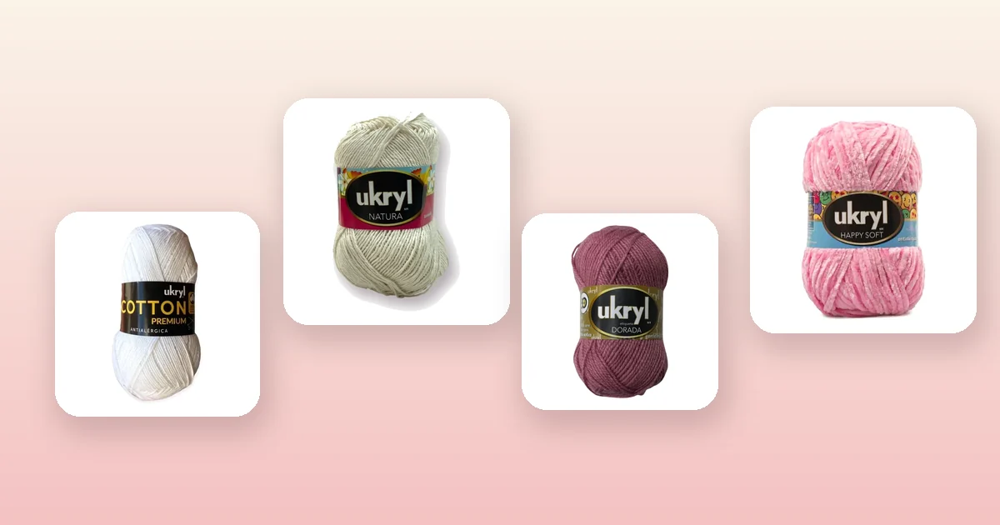

Proyectos de crochet
Cómo tejer un top a crochet paso a paso
El top a crochet es la prenda estrella del verano para quienes tejen: liviano, rápido de hacer y perfecto para lucir en la playa o en la ciudad. Se construye con dos paneles rectos, un par de tirantes y un borde de terminación, así que no necesitas experiencia avanzada. En esta guía tienes el patrón completo, la tabla de tallas, cuántos ovillos comprar y qué hilo de algodón elegir para un resultado profesional.

Materiales para tejer tu top
Un top tejido a crochet es una de las prendas de verano más gratificantes que puedes hacer: se teje en pocos días, gasta poco hilo y el resultado es una pieza única que no encontrarás en ninguna tienda. Para empezar necesitas:
- Entre 2 y 4 ovillos de hilo de algodón de 100 g, dependiendo de la talla y el largo. Más abajo tienes la tabla exacta con las cantidades por línea de hilo.
- Un ganchillo de 3 a 4 mm: el número exacto depende de tu hilo y de tu tensión. Si es tu primer proyecto con hilo fino, revisa nuestra guía de qué aguja o ganchillo usar para tejer.
- Aguja lanera, tijeras, cinta métrica y marcadores de puntos.
La clave de un buen top es elegir un hilo que respire y tenga buena caída. El algodón es el material por excelencia porque no da calor, absorbe la humedad y define muy bien los puntos. Estas son las mejores opciones del catálogo:
- Hilo de algodón 100%, ideal para tops: Hilo de Algodón Blanco, Hilo de Algodón Arena, Hilo de Algodón Celeste o Hilo de Algodón Negro, todos a $2.300 el ovillo de 100 g con 200 m de hilo. El algodón puro da un tejido fresco, firme y lavable a máquina.
- Hilo fino con caída suave: Hilo Ukryl Natura Crudo, Ukryl Natura Arena o Ukryl Natura Rosado, a $1.500 el ovillo de 50 g con 130 m. Son hilos finos de acrílico y algodón que dan un tejido liviano y con muy buena definición de puntos.
- Hilo con toque de brillo para un top de fiesta: Ukryl Dorada Palo Rosa, Ukryl Dorada Camel o Ukryl Dorada Menta, a $1.800 el ovillo de 100 g. La línea Etiqueta Dorada tiene un acabado semi brillante que le da un aspecto más elegante al top.
- Hilo texturado para un top con volumen: Lana Chenille Rosado a $2.000 el ovillo de 100 g. El chenille da un tejido aterciopelado y suave al tacto, ideal para un top de media estación.
Cómo se construye un top a crochet
Un top básico a crochet se compone de cuatro piezas sencillas: un panel delantero, un panel trasero, y dos tirantes. Los paneles son rectángulos planos que se tejen de abajo hacia arriba, desde el borde inferior hasta la línea del busto. Luego se unen por los costados, se agregan los tirantes y se remata con un borde de punto bajo.
La simplicidad de la construcción es lo que hace de este proyecto algo tan accesible. No hay sisas curvas, no hay aumentos complicados ni técnicas avanzadas. Si ya tejiste una manta a crochet o un crop top a crochet, el top completo te resultará igual de directo pero con un poco más de largo.
A diferencia del crop top, que termina justo debajo del busto, el top llega hasta la cintura o incluso hasta la cadera, lo que te da más cobertura y versatilidad. Puedes usarlo solo en verano o como capa debajo de una chaqueta en primavera.
Tabla de tallas para un top
Las medidas que necesitas son el contorno de busto (para calcular el ancho de cada panel) y el largo deseado (desde la axila hasta donde quieras que termine el top). Cada panel tiene la mitad del contorno de busto más 2 cm de holgura.
| Talla | Contorno de busto | Ancho de cada panel | Largo del panel |
|---|---|---|---|
| XS | 80 cm | 42 cm | 30 cm |
| S | 86 cm | 45 cm | 32 cm |
| M | 92 cm | 48 cm | 34 cm |
| L | 100 cm | 52 cm | 36 cm |
| XL | 108 cm | 56 cm | 38 cm |
Si prefieres un top más largo tipo túnica, agrega 10 a 15 cm al largo del panel. Para un top cropped que termine justo en la cintura, quédate con las medidas de la tabla o reduce 2 a 3 cm.
La muestra de tensión
Antes de empezar a tejer el top, necesitas saber cuántos puntos entran en 10 cm con tu hilo y ganchillo. Teje un cuadrado de muestra de 12 × 12 cm en el punto que vas a usar, mide al centro y calcula.
| Dato | Valor |
|---|---|
| Puntos en 10 cm | 18 (punto alto, ganchillo 3,5 mm) |
| Ancho del panel | 48 cm |
| Cálculo | 18 ÷ 10 × 48 = 86,4 → 86 puntos |
| Cadena base | 86 puntos + 3 cadenas de altura |
Si nunca has hecho una muestra de tensión, en la guía de cuánta lana necesito para tejer está el método completo con ejemplos. No te saltes este paso: un top que queda demasiado ancho o demasiado angosto no se puede arreglar fácilmente.
Paso 1: teje el panel delantero
Con la cadena base calculada, comienza a tejer el panel delantero en punto alto:
- Haz la cadena base (86 puntos + 3 cadenas de altura para talla M con Hilo de Algodón).
- Teje la primera vuelta de puntos altos, insertando el ganchillo en la cuarta cadena desde el gancho.
- Al final de cada vuelta, haz 3 cadenas de altura, gira y continúa. Cuenta los puntos al terminar cada vuelta para asegurar que no estás ganando ni perdiendo.
- Sigue tejiendo recto hasta alcanzar el largo de tu talla (34 cm para talla M).
- Al llegar al largo, corta la hebra dejando unos 40 cm de cola para la costura.
El panel delantero es un rectángulo perfecto: no lleva aumentos, disminuciones ni forma. Si quieres agregar un escote en V, en las últimas 4 a 6 vueltas puedes dividir el panel en dos mitades y tejer cada una por separado, haciendo una disminución al borde interior en cada vuelta.
Paso 2: teje el panel trasero
El panel trasero es idéntico al delantero: mismo número de puntos en la cadena base, mismo número de vueltas, mismo punto. La única diferencia es que no lleva escote, así que tejes recto de principio a fin.
- Repite exactamente la cadena base del panel delantero.
- Teje el mismo número de vueltas, contando al final de cada una.
- Corta la hebra dejando 40 cm de cola.
Para asegurarte de que ambos paneles sean iguales, extiéndelos uno sobre otro y compara. Si hay diferencia de más de 1 cm en el largo o el ancho, ajusta el que esté disparejo antes de continuar.
Paso 3: tirantes
Los tirantes son tiras angostas que unen el borde superior del panel delantero con el trasero, pasando por encima de los hombros.
- Haz una cadena de 50 a 70 puntos (el largo depende de la distancia entre tu hombro y el borde del panel; prueba antes de cortar).
- Teje 3 a 4 vueltas de punto bajo sobre la cadena para darle cuerpo al tirante.
- Corta la hebra y repite para el segundo tirante.
- Pruébate el top sujetando los tirantes con alfileres antes de coserlos definitivamente. Ajusta el largo si es necesario.
El ancho del tirante es cuestión de gusto: 3 vueltas de punto bajo dan un tirante fino tipo espagueti; 6 a 8 vueltas dan un tirante ancho más cómodo y con mejor soporte. También puedes hacer los tirantes trenzados: teje tres cordones finos y trénzalos entre sí.
Paso 4: ensamblaje
Ahora toca unir todas las piezas:
- Costuras laterales: enfrenta los paneles con el derecho hacia adentro. Con aguja lanera, cose ambos costados desde el borde inferior hasta arriba, dejando sin coser los últimos 3 a 5 cm superiores para la sisa (la abertura del brazo).
- Tirantes: fija cada tirante en la esquina superior del panel delantero (a unos 8 a 10 cm del borde lateral) y en la posición correspondiente del panel trasero. Cose con aguja lanera usando puntada invisible.
- Prueba antes de rematar: ponte el top y verifica que la sisa no quede muy abierta ni muy estrecha, y que los tirantes no se resbalen del hombro.
Si prefieres evitar las costuras con aguja, puedes unir los paneles con punto raso a crochet: inserta el ganchillo en ambos bordes a la vez y desliza punto por punto. Queda una costura más plana y elástica.
Paso 5: borde y terminaciones
Los bordes le dan al top un acabado limpio y profesional:
- Borde superior: levanta puntos por todo el contorno superior (incluyendo los tirantes si los cosiste) y teje 2 vueltas de punto bajo. Esto empareja el borde y evita que se enrolle.
- Borde inferior: levanta puntos por el borde de abajo y teje 2 vueltas de punto bajo. Si quieres un toque decorativo, la segunda vuelta puede ser de punto cangrejo (punto bajo tejido de izquierda a derecha) que da un cordoncito en relieve.
- Sisas: levanta puntos alrededor de cada abertura de brazo y teje 1 a 2 vueltas de punto bajo para que el borde quede parejo.
Al terminar, remata todas las hebras sueltas con la aguja lanera, escondiéndolas entre los puntos del tejido. Bloquea el top extendido sobre una toalla húmeda, dándole la forma final. Para el cuidado posterior, sigue nuestra guía de cómo lavar y cuidar la lana.
Cuántos ovillos necesitas según el hilo
Las cantidades son para un top talla M en punto alto, con un margen del 15% ya incluido. Si tejes en punto bajo, agrega un 25% más de hilo.
| Hilo | Peso del ovillo | Metros por ovillo | Talla XS-S | Talla M | Talla L-XL |
|---|---|---|---|---|---|
| Hilo de Algodón | 100 g | 200 m | 2 | 3 | 3-4 |
| Ukryl Natura | 50 g | 130 m | 4 | 5 | 6 |
| Ukryl Etiqueta Dorada | 100 g | 200 m | 2 | 3 | 3-4 |
| Lana Chenille | 100 g | 100 m | 3 | 4 | 5 |
| Cono de Algodón | 200 g | 400 m | 1 | 1-2 | 2 |
Los Conos de Algodón Crudo o Cono de Algodón Blanco a $4.200 son la opción más rendidora para tops: cada cono trae 200 g y 400 m de hilo, así que con un solo cono puedes tejer un top completo en talla S o M. Si quieres afinar tu cálculo, usa la fórmula de la guía de cuánta lana necesito para tejer.
Variaciones de puntos para tu top
El punto alto es la base más versátil, pero no es la única opción. Cada punto cambia la textura, la caída y la cantidad de hilo que necesitas:
- Punto alto: el estándar para tops. Teje rápido, da buena caída y un tejido semi calado que respira bien. Es el punto que usamos en el paso a paso de esta guía.
- Punto vareta doble (o punto alto doble): más alto que el punto alto, deja espacios más abiertos entre los puntos. Ideal para un top playero con efecto calado. Gasta un poco menos de hilo.
- Punto bajo: da un tejido más denso, firme y compacto. Es perfecto para un top estructurado que no se transparente. Tarda más y gasta alrededor de un 25% más de hilo.
- Punto abanico o punto concha: un punto decorativo que alterna grupos de puntos altos en un mismo punto con cadenas. Da un efecto ondulado muy bonito para la parte inferior del top.
- Punto granny: grupos de 3 puntos altos separados por cadenas. Da un tejido calado con textura, ideal para un top boho. Aprende la base en la guía del granny square.
También puedes combinar puntos: por ejemplo, tejer el cuerpo en punto alto y los últimos 4 cm del borde inferior en punto abanico para darle un remate ondulado.
Errores comunes al tejer un top
- No hacer la muestra de tensión. El algodón no tiene la elasticidad de la lana, así que si te equivocas en el cálculo de puntos, el top quedará demasiado grande o demasiado chico sin posibilidad de ajuste.
- Elegir un hilo que no respira. Un top de acrílico grueso da mucho calor en verano. Para prendas de verano, elige siempre algodón puro o mezclas con alto porcentaje de algodón.
- Tirantes disparejos. Mide ambos tirantes antes de coserlos y cuéntalos en puntos, no solo en centímetros. Un tirante más largo que el otro hace que el top quede torcido.
- Sisas demasiado grandes. Si dejas demasiados centímetros sin coser en la parte superior de los costados, la sisa queda muy abierta y el top no se sostiene bien. Para la mayoría de las tallas, 3 a 5 cm sin coser son suficientes.
- No bloquear la prenda. El bloqueo húmedo (extender el top mojado sobre una toalla y dejarlo secar en forma) empareja los puntos y le da la caída final. Sin bloqueo, el top puede quedar irregular.
- Olvidar las terminaciones de las sisas. Las aberturas de los brazos sin un borde de punto bajo quedan desprolijas y se estiran con el uso. Dos vueltas de punto bajo alrededor de cada sisa resuelven esto.